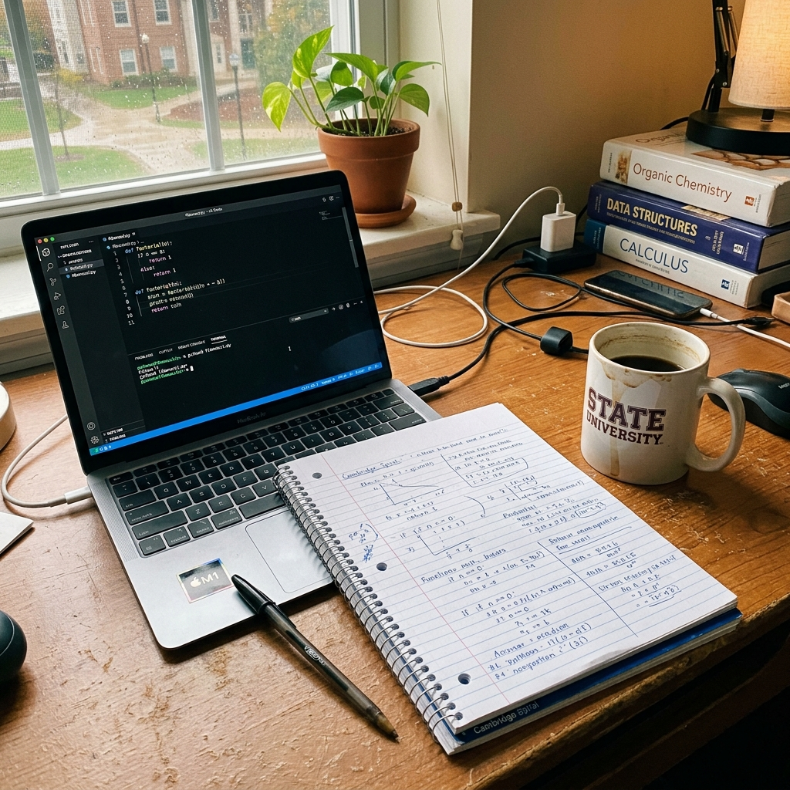

What are Data Structures and Algorithms (DSA)? A Complete Beginner's Guide

1. The DSA Nightmare (And Why It's Actually Easy)
Let's be totally honest with each other for a second. If you are a BCA, MCA, or B.Tech student right now, the acronym "DSA" has probably given you a headache at least once. I remember my college days clearly—whenever the professor mentioned Data Structures and Algorithms, half the class would instantly zone out.
We all just wanted to build cool websites using React or create mobile apps. Nobody wanted to reverse a Linked List or sort a random array of numbers on a whiteboard. It felt like useless math.
But here is the harsh reality: every major tech company (Google, Amazon, Microsoft, and even top startups in India) uses DSA as their primary filter for hiring Software Engineers. Why? Are they just trying to torture students? Not at all. In this guide, I am going to break down DSA using simple, everyday language. No confusing jargon, I promise. By the end of this article, you will understand exactly why DSA is the most powerful tool in a developer's toolkit.
2. What Exactly is a Data Structure?
Let's forget computers for a minute. Imagine your own bedroom.
If you take all your clothes, books, shoes, and gadgets and throw them into one giant pile on your floor, you are technically "storing" your items. But what happens when you are getting late for college and need to find one specific pair of black socks? You will have to dig through the entire pile, which might take 20 minutes.
Now, imagine you buy a proper wooden wardrobe. You hang your shirts on the left, fold your pants on the right, and put your socks in a dedicated drawer. Now, finding that same pair of black socks takes exactly 2 seconds.
This is exactly what a Data Structure is. It is simply a specific way of organizing, storing, and managing data in a computer's memory so that the data can be accessed, updated, or deleted as fast as possible.
3. The 5 Core Data Structures You Must Know
Depending on what type of data a software is handling, it needs a different type of "wardrobe." Here are the main ones we use in the industry:
- Arrays: Imagine a pillbox with Monday to Sunday labeled on it. Items are stored right next to each other in a fixed, continuous line. It's super fast to read (you know exactly where Wednesday is), but hard to resize.
- Linked Lists: Think of a Treasure Hunt. You open box A, and inside is your data, plus a piece of paper pointing to the location of Box B. Box B points to Box C. They aren't stored next to each other, but they are linked.
- Stacks (LIFO): Have you seen a stack of heavy plates at a wedding buffet? You can only take the plate on the very top. If a waiter brings a clean plate, he puts it on top. This is called Last In, First Out (LIFO).
- Queues (FIFO): Think of a line outside a movie theater. The first person who stands in the line gets their ticket first. First In, First Out (FIFO).
- Trees & Graphs: These are non-linear. Think of a family tree, or a corporate chart showing the CEO at the top, managers below, and employees at the bottom. Graphs are like cities connected by highways.
4. What is an Algorithm?
If the Data Structure is the "wardrobe," then the Algorithm is the instruction manual on how to find your clothes inside it.
An algorithm is simply a step-by-step set of instructions to solve a specific problem. You use algorithms every single day! Making a cup of tea is an algorithm: 1. Boil water, 2. Add tea leaves, 3. Add milk and sugar, 4. Strain and serve. If you mess up the steps (put milk before boiling water), the outcome is ruined.
In programming, we write algorithms to search for data (like finding a contact in your phonebook) or sort data (like sorting Amazon products from lowest to highest price).
5. Don't Be Scared of Big O Notation
When you start learning DSA, you will immediately see things like O(n) or O(1). Students panic when they see this, thinking it's advanced calculus. It's not.
Big O Notation is just a way for developers to grade how fast an algorithm is. Think of it like a car's mileage. If I write an algorithm to find a number, and my algorithm takes 10 seconds, but your algorithm takes 2 seconds, your code has a better "Big O". We use it to ensure our code won't crash when millions of users use our app at the same time.
6. Real-World Applications (Why We Actually Use It)
Still think DSA is just for passing exams? Look at the apps on your smartphone right now:
- Google Maps (Graphs): Maps use a Graph data structure. The cities are "nodes" and the roads are "edges". To find the shortest route between your house and the airport, Google runs Dijkstra's Algorithm.
- Microsoft Word "Undo" Button (Stacks): Ever pressed Ctrl+Z? Software programs use a Stack to remember your actions. Your last action is put on top. When you hit Undo, it simply "pops" that top action off the stack.
- Spotify Playlists (Linked Lists): When you hit "Next Track", the music player is simply jumping to the next node in a Circular Linked List.
7. Why Google and Amazon Obsess Over It
So, why do top product-based companies ask DSA questions in interviews instead of asking you to build a webpage?
Because frameworks like React, Angular, or Django change every 3-4 years. But the core logic of computer science never changes. Companies like Amazon handle massive scale. If an Amazon engineer writes a bad algorithm for processing the shopping cart, the checkout page might take an extra 2 seconds to load. For Amazon, a 2-second delay means millions of dollars lost in abandoned carts.
They test you on DSA to ensure you know how to write code that is not just "working," but mathematically efficient and scalable.
8. How to Start Learning DSA Today?
If you are a beginner, here is my personal roadmap for you:
- Pick one language and stick to it: C++, Java, or Python. Do not keep switching languages. Language doesn't matter; logic does.
- Learn the Basics First: Understand Arrays, Loops, and Functions thoroughly before touching anything advanced.
- Start with Arrays and Strings: Solve basic problems like "Reverse a string" or "Find the maximum number in an array".
- Practice Consistently: Websites like LeetCode, GeeksforGeeks, and HackerRank are your best friends. Solve 1-2 easy problems daily.
9. Frequently Asked Questions (FAQ)
💬 Is strong mathematics required to learn DSA?
Not at all! This is a massive myth. Basic 10th-grade arithmetic and simple logic are more than enough for 90% of DSA concepts. You just need a problem-solving mindset, not a PhD in Calculus.
💬 Which programming language is best for DSA?
C++, Java, and Python are the holy trinity for DSA. C++ is the fastest and most popular in competitive programming. Java is widely used in enterprise companies. Python is the easiest to read. Pick whichever you are most comfortable with.
💬 Can I get a software job without knowing DSA?
Yes, absolutely. Many service-based companies and web development agencies hire based on development skills (like React, Node.js, PHP). However, if you want high-paying packages at product-based giants (FAANG), DSA is non-negotiable.
💬 How long does it take to master DSA?
If you are a complete beginner, it takes about 3 to 5 months of consistent practice (2-3 hours daily) to get comfortable with medium-level problems on LeetCode. It is a marathon, not a sprint.
Learning Data Structures and Algorithms is like going to the gym for your brain. It hurts at first, but it builds your fundamental problem-solving muscles. Stick with it, practice daily, and I promise you will become an incredible Software Engineer.

Founder of TyagiHub. Dedicated to demystifying the most complex topics in computer science and software engineering for the next generation of technologists.
Read full author profile →